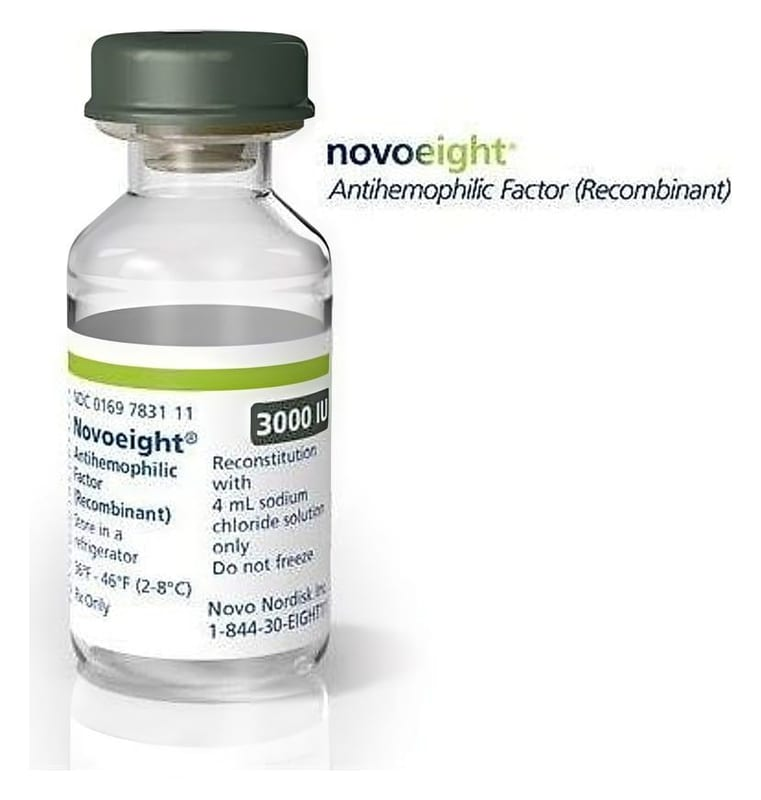

Novoeight 3000 IU Enjeksiyonluk Çözelti Hazırlamak İçin Toz Ve Çözücü, 1 Adet

Ne için kullanılır
KT · Bölüm 1NovoEight®, etkin madde olarak nominal olarak 3000 IU turoktokog alfa (rekombinant insan koagülasyon faktörü VIII) içerir. Faktör VIII, kanda doğal olarak bulunan ve kanın pıhtılaşmasına yardımcı olan bir proteindir.
NovoEight®enjeksiyonluk çözelti için toz ve çözücüdür. Her NovoEight®ambalajı, 5 mL’lik bir flakon içerisinde beyaz veya hafif sarı toz ve kullanıma hazır enjektör içinde 4 mL berrak ve renksiz çözücü, 1 piston kolu ve 1 flakon adaptörü içerir.
Turoktokog alfa, Çin hamsterı yumurtalık (CHO) hücrelerinde rekombinant DNA teknolojisi kullanılarak üretilir ve hücre kültürü prosesinde, saflaştırma ya da son formülasyon sırasında herhangi bir insan veya hayvan kaynaklı protein ilavesi olmaksızın hazırlanır.
NovoEight®, hemofili A (doğuştan gelen bir faktör VIII eksikliği) hastalarında kanama epizotlarının tedavisinde ve önlenmesinde kullanılır ve tüm yaş gruplarında kullanılabilir.
Hemofili A hastalarında faktör VIII ya eksiktir ya da gerekli işlevi göstermiyordur. NovoEight®bu hatalı ya da eksik faktör VIII’ in yerine geçer ve kanın, kanama bölgelerinde pıhtı oluşturmasına yardımcı olur.